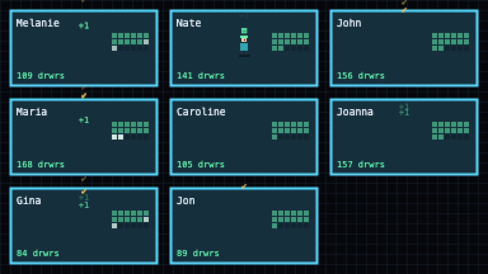
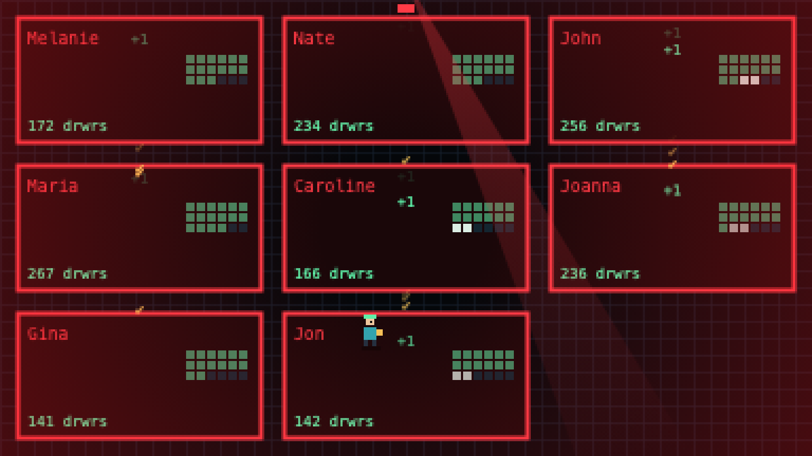
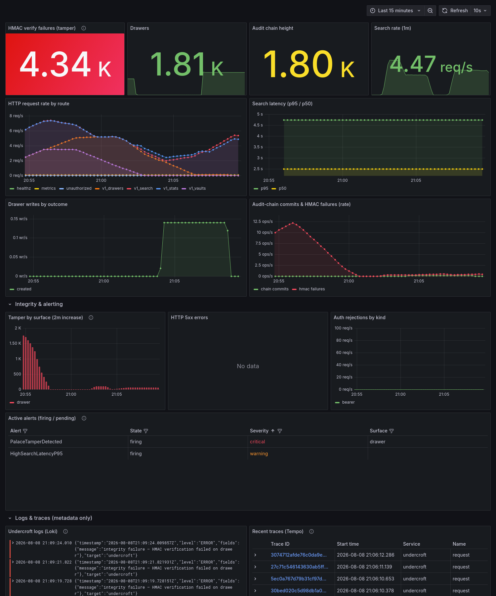
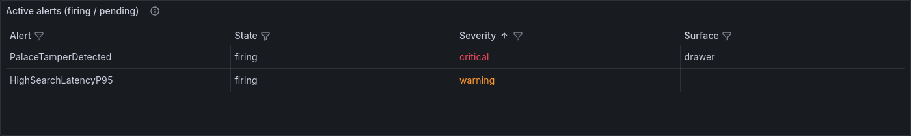

UNDERCROFT
Hardened, local-first AI memory. Your agent's every word, kept verbatim in encrypted vaults — HMAC-chained, tamper-evident, searchable, and never leaving your machine.
Below the hall. Cut from stone. Sealed.
A memory system you can watch working
Try the vault
Seal: XChaCha20-Poly1305 encrypts content and its embedding. The AAD binds vault + record id — ciphertext can't be replayed anywhere else.
Verify: every record carries an HMAC-SHA256 tag, and every write joins a
tamper-evident audit chain. Change one byte on disk and
verify names the record.
Keys: derived per-vault with HKDF domain separation. One vault falling tells an attacker nothing about its siblings.
The Palace Monitor
A telemetry build serves a self-contained pixel-art dashboard at
GET /monitor. Point it at a running palace and watch the archivist file
drawers into wings, searches pulse the halls, the audit chain stamp every write — and
the ambulance beacon fire the instant a record fails its HMAC. It reads the live
server-sent event stream: metadata only, never drawer contents, on every
security level — a subscription exists only after the bearer and the per-vault
assertion are verified.


hmac-fail event floods the palace red. The
beacon only ever fires on a real integrity failure.Opt-in, zero-egress
Monitor and stream exist only in a --features telemetry build. Default builds
carry no telemetry deps and phone nothing home; the page is fully self-contained —
same-origin, no external requests.
Metadata only
The stream carries counts, rates, and wing/room labels — never drawer content or keys. Sealed vaults are no exception: sealing protects the words, and a wing name is metadata the vault already exposes at rest.
A beacon you can trust
The tamper light is wired to the same undercroft_hmac_verify_failures_total signal as the
metrics: it fires on real verification failure and nothing else. No synthetic alarms.
Alerting you can trust
A telemetry build drops into a full Grafana stack —
Prometheus metrics, Loki logs, Tempo traces, and
Alertmanager. Health and latency are there, but the headline is
integrity: the instant a record fails its HMAC, PalaceTamperDetected
fires — tagged with the surface that was hit — and routes to your pager with a
link to the runbook.


PalaceTamperDetected fires critical, names the
drawer surface, and is delivered through Alertmanager. No synthetic alarms.Alertmanager-routed
Six rules ship out of the box — tamper, chain-stalled, target-down, latency, 5xx, auth. Route them to Slack, email, or PagerDuty; the demo stack logs every delivery.
Logs & traces, metadata only
Loki logs and Tempo spans carry operation, route, and vault — never query text, drawer content, or keys. Full traceability without leaking the palace.
A tamper runbook
The alert links to a runbook: where it happened, and how to confirm, mitigate, fix, and prevent it.
The undercroft is the vaulted chamber beneath the hall — cut from stone, sealed against damp and fire, and built to outlast everything raised above it.
Benchmarks that were actually run
Both public long-memory suites, end to end, on the shipped scoring pipeline — full datasets, MemPalace's own protocol and metrics, everything inside Docker. Two configurations: the default hash embedder (deterministic, offline, zero downloads) and all-MiniLM-L6-v2 via ONNX — the same model class MemPalace used, so those rows compare like for like. MemPalace rows are their published numbers.
What was measured
Evidence recall at session granularity, the metric MemPalace reports: LongMemEval-S (xiaowu0162/longmemeval-cleaned — the exact file MemPalace benchmarked) and LoCoMo (snap-research/locomo; 1,982 of 1,986 QA are evaluable, no-evidence questions skipped). Scoring runs the sealed-level pipeline — the same code path production uses.
How it was run
undercroft-bench rebuilds a palace per conversation, files every session
verbatim, then checks whether the annotated evidence surfaces in the top-k.
Ranking blends cosine with a real BM25 lexical score over the verified
candidates; MiniLM inference is pure Rust via tract (256-token truncation, mean
pooling), sharded across containers with --skip/--limit.
The hash rows need no model at all and run ~95× faster per question.
Honest reading
Matched-model rows are the fair comparison: +2.8 over MemPalace raw on LongMemEval-S and +1.0 over their tuned hybrid (99.4 vs 98.4), and +5.7 over their best on LoCoMo (94.6 vs 88.9). MemPalace numbers come from their own harness; ours from the commands below, reproducible on any machine with Docker. The zero-model hash rows are the honest floor, and honestly split: 94.6 on LoCoMo is above MemPalace's best (88.9) with no model to download, while 95.0 on LongMemEval-S sits below their raw 96.6 — that suite is where the model still earns its keep.
Against the memory-layer market
Competitors, measured — not quoted. Every system ingests byte-identical chunks of the same LoCoMo conversations and is scored by one shared scorer, on the same machine, on one pinned stack — the full corpus, all 1,982 questions. Every row is fully local — no cloud APIs anywhere — and each competitor runs its own published server in its best documented local configuration. Numbers are reported as measured, favorable or not; raw logs ship in the repo, and corrections are accepted by PR.
| undercroft | mem0 local | |
|---|---|---|
| ingest, whole corpus | 16.5 s | ≈32 h (LLM per write, 92 s/chunk measured) |
| search latency | 5.5 ms/query | 93–210 ms/query |
| what survives ingest | every word, verbatim | 55 distilled facts of 177 chunks (measured subset) |
| at rest | sealed · AEAD + audit chain | plaintext vector store |
| model runtime needed | none | LLM + embedder, every write |
Eight rooms of the machine
Sealed vaults
Each namespace gets its own database and its own HKDF-derived keys. Content and embeddings encrypted at rest; structure searchable; nothing plaintext-derived ever touches disk.
Tamper evidence
HMAC tags on every drawer, knowledge-graph fact, and tunnel; an append-only
audit chain with a MAC'd manifest. verify replays all of it.
Verbatim recall
Never summarized on the way in. Hybrid semantic + lexical + recency search with one-typo tolerance returns your exact words.
Knowledge graph
Temporal facts with validity windows. kg query --as-of 2024-06
answers what was true then; supersede closes the old fact and opens the new.
Untrusted accelerators
Qdrant, Chroma, pgvector, Milvus, Weaviate — fed only sealed bytes. Their answers are re-verified against local HMACs before you ever see them, then filtered by the same retrieval policy the local path uses — trust floor, quarantine fence, closed vocabularies — off each candidate's verified metadata. An index push is not a route around admission control.
Agent-native
34 MCP tools over stdio or team HTTP (bearer-enforced; --read-only is a
posture on the whole process, not a filter on one port), auto-save hooks, per-agent
diaries, transcript sweeps — memory that survives the gap between sessions. The
tool list is an inventory the build counts itself against, in both directions.
Screened at the door
Opt-in write-path admission, enforced at the one write choke point behind a
required argument — a new write path does not compile until its author
decides. A deterministic detector diverts injection-shaped writes into a sealed
quarantine wing that no read reaches: not search, not wake-up, not
the closet index, and MCP refuses to read or destroy the evidence at all. Rulings
are chain-audited, a diversion says so on every surface, and an optional local
classifier may say suspicious — never admitted. Trust classes and
training-draw caps bound what any writer can shape.
Forgetting with a receipt
forget destroys through the audit chain and hands back a verifiable
attestation — heads, tombstones, content fingerprints. Retention policies per
wing/room enforce by explicit attested sweeps, never by a silent timer.
GDPR/RTBF with proof.
Use cases it covers today
A coding agent that remembers
MCP stdio server + auto-save hooks: every session's decisions survive the
crossing. wake-up loads identity and the essential story;
search returns the exact words, one-typo tolerant.
A team's shared memory
One serve-http instance, bearer-enforced beyond loopback, with
--read-only for consumers — a posture the whole process takes, gated
in front of dispatch and failing closed, so a route nobody remembered to guard is
refused rather than served. Same MCP tools over HTTP — every teammate's agent
shares one sealed palace.
A multi-tenant memory product
The versioned /v1 REST engine: per-vault assertions, external
embeddings, count-verified migration — and an optional orchestrator that
routes fleets of engines with HMAC-only tenant tokens.
An auditable record of what was said
Verbatim storage, HMAC on every record, a tamper-evident audit chain, and
crash-safe key rotation. verify replays it all; a rollback is
an alarm, a crash never is. Egress joins the chain too: every export is
audited unconditionally, and UNDERCROFT_READ_AUDIT=chain adds a
record per content-returning read — a keyed fingerprint of the subject, never its text.
Backups that never leak
Encrypted export bundles sealed to a hybrid post-quantum recipient —
X25519 and ML-KEM-768, both shared secrets feeding one key, because the
bundle is the one thing that leaves the machine and harvest-now-decrypt-later
only needs it copied. A migration file never exists in plaintext. Restore is
import --identity; token matrices ride along as portable artifacts.
Offline retrieval that scales
Deterministic hash embedder by default; opt-in ONNX / ONNX Runtime models, cross-encoder rerank, ColBERT late interaction, PQ/IVF and MUVERA FDE tiers — every number on this page measured, never promised.
From zero to a remembering agent
Give your agent a memory
Local-first, sealed by default, zero bytes phoned home. One binary, one command to start — and a guide written for the AI that will operate it.